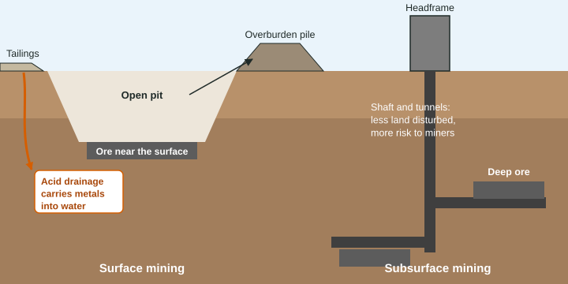

Nearly everything we build or use starts in a mine: iron for steel, copper for wires, sand and gravel for concrete, lithium and cobalt for batteries, coal to burn for electricity. This page covers how ore is mined, what mining does to land and water, and how mined land is restored.
Ore and its grade
Ore is rock that holds enough of a valuable mineral to mine at a profit. The share of metal in the rock is its grade. Copper ores mined today often hold well under 1% copper, so for each kilogram of copper a mine digs, crushes and processes more than a hundred kilograms of rock. As the richest ores are used up, lower-grade ores are mined, which means more rock moved, more energy used and more waste for each kilogram of metal.
An ore holds 0.6% copper by mass. How much ore gives 1,500 kg of copper?
Copper is 0.6% of the ore: . So ore
Surface and subsurface mining
Surface mining removes the overburden, the soil and rock above a deposit, to reach ore or coal near the surface. Strip mining peels off long strips; open-pit mining digs a huge stepped hole; mountaintop removal blasts away the top of a mountain to reach coal seams and dumps the rock into nearby valleys, burying streams.
Subsurface mining reaches deep deposits through vertical shafts and horizontal tunnels.

| Surface mining | Subsurface mining | |
|---|---|---|
| Used for | shallow deposits | deep deposits |
| Cost | lower | higher |
| Risk to miners | lower | higher: cave-ins, explosions of methane gas, poor air, lung disease from coal dust |
| Land disturbed | large areas cleared; habitat removed; huge waste piles | smaller; but the ground above can sink (subsidence) |
What mining does to water and air
- Acid mine drainage. Mining exposes sulfide minerals such as pyrite to air and water. They react to form sulfuric acid, which drains out of mines and waste piles, lowers the pH of streams, and dissolves toxic metals (lead, mercury, arsenic, zinc) from the rock. It can go on for decades or centuries after a mine closes.
- Tailings. The finely ground waste left after the mineral is extracted is stored in piles or ponds behind dams. Tailings can leach metals, and when a tailings dam fails, a flood of waste can bury land and poison rivers.
- Sediment and erosion. Bare ground and waste piles wash into streams.
- Dust. Blasting, hauling and wind on waste piles put particles into the air.
A stream above a mine has a pH of 7.0; below the mine it is 4.0. How many times more acidic is the water below the mine?
Each pH unit is a factor of 10. The difference is units, so it is times more acidic, not 3 times.
Reclamation
Land reclamation restores mined land: filling and regrading pits and waste piles to stable slopes, putting back the topsoil saved at the start, and planting native grasses and trees so roots hold the soil and wildlife can return. Treating acid drainage, by adding crushed limestone or routing it through constructed wetlands, raises the pH and lets metals settle out. In the United States, the federal law on surface coal mining requires companies to post a bond before mining, so the money for reclamation is there even if the company goes out of business. Reclaimed land rarely matches the original ecosystem, but it can support plants and animals again.